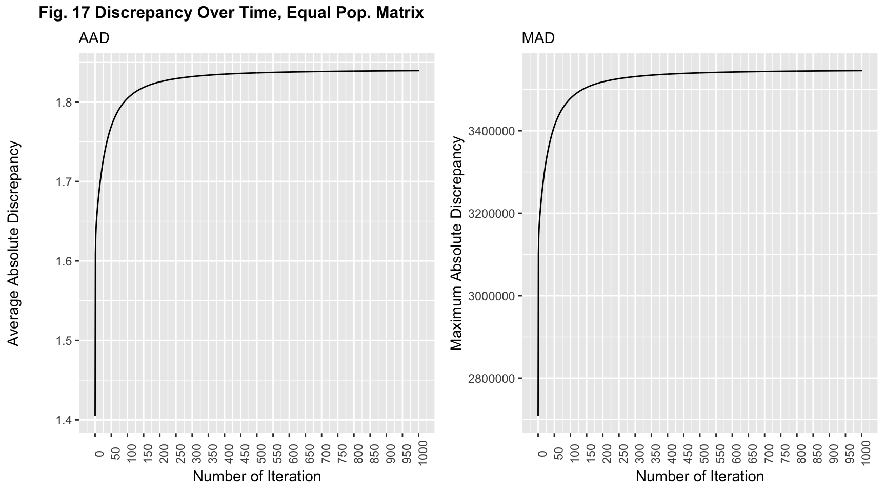

3 Executive Summary
3.0.1 Preface
Mobile phones have revolutionized the way we communicate with each other and how we lead our daily lives. In particular smart phones introduce new usage ideas everyday, many of them relying on simple sensors in the phone. The GPS sensor for example can locate the phone whenever it has sufficient signal and apps provide their users with detailed location histories (if the user allows for this data collection). Using this kind of data to estimate how many people are at a certain location at a given time could be very informative, however, it requires for research to have the consent of all people - leading most likely to biased estimations for different reasons. A more effective way and privacy-securing way is the usage of Mobile Network Operator (MNO) data. Here MNO provider (e.g. Telecom, Vodafone,…) gives access to the their radio cell network and the numbers of phones logged to every cell/antenna. This means a chosen data analyst would not need access to detailed and highly personal location data but only receives a dataset containig the location of cells, their estimated coverage range and the number of phones logged to the respective antenna at a certain moment. EUROSTAT and the European National Statistical Institutes are experimenting with the potential usage and especially necessary methods and workflows for implementing such a data source into the general production of Official Statistics. Knowing when and where how many people are approximately corresponds to the statistical indicator called present population or de facto population. While the resident population takes into consideration only the individuals who permanently reside in a certain geographical area, the present population “is composed by all individuals who are physically present in the geographic area of interest at a selected reference time” [1].
EUROSTAT has organized in 2020 for the first time the EUROSTAT Coding Lab, offering EMOS students a chance in getting to know the production of Official Statistics on the European level with a particular focus on coding. This particular Coding Lab introduced the concepts of using MNO data for estimating present population statistics.
Thanks to this project and our mentors, we - a group of 4 international students from all over Europe - had the opportunity to dig deeper into the world of spatial analysis as well as simulation studies in R. Throughout this notebook, we faced multiple challenges: Developing code in a team, applying (almost) Big Data methods and concepts such as parallizing code, developing modular and fully reproducible code, or just working together from 4 different countries in times of Covid-19.
The notebook at hand relies on multiple scripts that follow a methodological chain. They are conceptualized and written in a modular fashion, making further use of the code for different parameters very easy. Many solutiones need to run for quite a while therefore certain objects are pre-built and only loaded into the notebook.
Our concrete research goal is to evaluate and compare different cutting edge estimation techniques of present population with MNO data. Because MNO data, even though aggregated, is very secure, we did not work with real data. Instead we needed to completely build our own toy world, aiming at a very realistic scenario which could be the base of our evaluation. This simulation setting gives us the unique opportunity to actually test the performance of different estimators because we are in control of the true values. The notebook is structured as follows: In the next section we introduce the generation of the toy world, consisting of a geographical area with a mobile phone population and a corresponding radio cell network. We mention most important features and parameters as well as explain how mobile phones are logged to radio cells (device-to-cell association). Following this we introduce two of the currently existing estimation strategies, explain their most important characteristics and assumptions and apply them to our toy world. In the final section we undertake a detailed evaluation of each estimator, focusing on statistical as well as geographical-distributional performance measures. We end this evaluation with further exploring the convergence behavior of one of the estimators and formulating further potential research goals in this area.
3.0.2 Toy World Generation
Our toy world bases on population census data from the German Federal Statistical Office [2] (https://www.destatis.de/EN/Home/_node.html). This data entails continous population counts on a 100m * 100m grid. For our project we reduce the population count to a third to mimic the process of receiving data from an MNO provider - therefore we assume that the population count resembles the number of mobile phones in this area. For computational reasons, this version will only focus on a subset of the tiles located in the state of Bavaria, which is situated in the south-east of Germany. We chose this area because it comprises a high diversity of urban, suburban, and rural areas.
Terminology used in this project: Due to various definitions out there, it is imperial to define the different terminologies used in this project before going further to reduce unnecessary confusion. - When we talk about tiles, we mean any square on the regular 100 * 100 m2 grid. - An antenna is a device facilitating between radio transmission and reception. Specifically in our case, an antenna transmits and receives cell phone signals. This is also known as a cell. - A (radio) tower or commonly referred to as a cell tower, cellular site, or cellular base station is a tower equipped with antennas.
# change accordingly
knitr::opts_knit$set(root.dir = normalizePath("/Users/tonyhung/OneDrive - Vysoká škola ekonomická v Praze/YAY"))
knitr::opts_chunk$set(fig.width = 9)
knitr::opts_knit$set(eval.after = "fig.cap")library(tidyverse)
library(sf)
library(raster)
library(Matrix)
library(knitr)
library(kableExtra)
library(ggthemes)
library(cowplot)
library(transformr)
library(gganimate)
set.seed(762)
census.de.100m.tile <- readRDS("working objects/census.tile.final.rds") # Bounding box of focus area
bb.focus.dat <- data.frame(xmin = 4400000, xmax = 4500000,
ymin = 2700000, ymax = 2900000)
bb.focus.vec <- c(xmin = 4400000, xmax = 4500000,
ymin = 2700000, ymax = 2900000)
# Download data from : https://gadm.org/download_country_v3.html --> R(sf) level 1
germany.raw <- readRDS("working objects/gadm36_DEU_1_sf.rds")
germany <- germany.raw %>%
st_transform(crs = 3035)
focus.area.plot <- germany %>%
ggplot() +
geom_sf() +
geom_rect(data = bb.focus.dat, aes(ymin = ymin, ymax = ymax,
xmin = xmin, xmax = xmax,
color = "red"),
size = 1, fill = "transparent") +
ggtitle("") +
scale_color_identity(name = "",
labels = c("Focus area"),
guide = "legend") +
labs(x = NULL, y = NULL,
title = "")
plot_grid(focus.area.plot,
labels = "Fig.1: Focusing on a part of South Bavaria",
hjust = -0.1, label_size = 13)
(#fig:focus area)We will only focus on a subset of the tiles located in the state of Bavaria because it comprises both urban, suburban, and rural areas
As mentioned above this area is very heterogeneous in urban-rural intensity. Knowing the location of urban centers is very important for the corresponding radio cell network as there are differences in cell coverage between these different area kinds. We are aiming at developing a 3-category classification for each tile: Rural, Suburban and Urban. Based on the census data on the tile level we cannot locate urban centers just yet. Classifying tiles on such a low spatial resolution into one of these categories independent from each other (i.e. based on their population numbers) would not lead to the true location of urban centers. Therefore we apply a spatial clustering algorithm to account for the spatial dependence. The plots below present our classification results:
tile.prop.plot <- readRDS("Estimates/Plot.files/tile.prop.plot.rds")
cluster.plot <- readRDS("working objects/cluster.plot.rds")
plot_grid(cluster.plot, tile.prop.plot, labels = "Fig.2 : Population Classification",
hjust = -0.1, label_size = 14, rel_widths = c(0.8, 1)) 
(#fig:pop distribution 1)Figure 2a shows the classification results from the clustering algorithm and the proportion of people in the area categories.While Figure 2b shows the distribution of the four different categories of tiles obtained throught spatial clustering.
Figure 2 shows the classification results from the clustering algorithm and the proportion of people in the area categories. We aimed at having 4 different categories: Uninhabited, Rural, Suburban and Urban. When working at this low spatial resolution, it is discouraged to classify tiles independently based on their respective population value - one needs to take spatial dependence into consideration in order to identify urban centers. Therefore, we apply a spatial clustering method, mainly for identifying the last two categories. In order to run the clustering algorithm, the original census population is first divided into tiles above and below 15 people per tile. Tiles below 15 are either classified as Uninhabited or Rural, from the start (uninhabited corresponds to the tiles with 0 population). The clustering is then done on the tiles that are above 15 people per tile. Based on the results of the clustering, we define urban areas as clusters that have an agglomeration of more than 100 tiles. Suburban areas are defined as clusters that have more than 50 and less than or equal to 100 tiles. The remaining clusters are considered as Rural areas and therefore result in the same classification as the tiles from above, which had less than 15 people.
The stacked bar plot shows the proportions of the tiles according to the four categories. Based on our clustering algorithm, 2.47% of the tiles are urban areas. 6.9% of the tiles are uninhabited areas. 90.63% of the tiles are suburban areas, and NA% of the tiles are rural areas.
true.geo.eval.plot <- readRDS("Estimates/Plot.files/true.pop_map.rds")
ECCDF.true <- readRDS("Estimates/Plot.files/ECCDF.true.rds")
ECDF.true <- readRDS("Estimates/Plot.files/ECDF.true.rds")
ECCDF.pop.plot <- ECCDF.true +
geom_hline(yintercept = -0.3010300, linetype = "dotted") +
geom_hline(yintercept = -1, linetype = "dotted") +
geom_text(x = 1.5, y = -0.2, label = "50% of the data") +
geom_text(x = 1.5, y = -0.9, label = "90% of the data") +
labs(y = "log10(Prob(Y > x))", x = "log10(Mobile phones)",
colour = "") +
ylim(-7, 0) +
theme(legend.position = "bottom")
ECDF.pop.plot <- ECDF.true +
xlim(0, 30) +
labs(y = "", x = "")
pop.dist.ecdf.insert <- ECCDF.pop.plot +
annotation_custom(ggplotGrob(ECDF.pop.plot),
xmin = 0, xmax = 1.5,
ymin = -7, ymax = -3)## Warning: Removed 416 rows containing missing values (geom_point).plot_grid(true.geo.eval.plot, pop.dist.ecdf.insert, labels = "Fig. 3: Mobile phone density per tile",
hjust = -0.1, label_size = 14, rel_widths = c(0.8, 1))## Warning: Removed 1 rows containing missing values (geom_point).
(#fig:pop distribution 2)The Figure 3a shows the geographical distribution of the tiles classified thought the clustering algorithm of the population. In Figure 3b there is rapresented the logarithm of ECCDF of the population data and the graph inside the figure 3b is the linear ECCDF.
Figure 3 shows the mobile phone density per tile in the focus area. In particular, we have 4 different colors representing the clusters: Uninhabited, Rural, Suburban and Urban.
However, to have a deeper look of the mobile phone density per tile, we choose to represent the data with an empirical cumulative complementary distribution function (ECCDF) (using a log base 10 transformation).
The ECCDF is a step function with jumps i/n at observation values, where i is the number of tied observations at that value. Moreover, missing values are ignored and the objective “complementary” means that we need to subtract 1 - the cumulative probability. It is commonly used with variables that have a highly skewed distribution. We can see that this is the case - the population on this low spatial resolution is heavily right skewed.
As the figure suggests, 50% of the data are represented by uninhabited tiles with no phones; furthermore, 90% of the tiles contain less than half of the mobile phones in our focus area. One can also see the tiles’ classification based on the clustering results. Some tiles classified as Rural have higher values for their mobile phone population - this is because they are not considered as an Urban or Suburban cluster, as mentioned above. 10% left are tiles both urban and rural containing 0.5 and above mobile phones.
3.0.2.1 Generation of a synthetic Radio Network
We generate a radio network, which is composed of three layers. The layers follow the pop.area.kind variable - layer 1 (Rural) spans over the rural, suburban and urban tiles, layer 2 (Suburban) spans over the suburban and urban tiles and layer 3 (Urban) is spanned over the urban tiles.
Important features and parameters of the generated radio network are:
The layers follow a hexagon shape with cell towers located in the respective centroid of each hexagon
Towers vary in distance to each other of the same layer, i.e. how far/close are towers of the same layer located to each other: layer 1 = 27,000m; layer 2 = 7000m; layer 3 = 900m (-> the more urbanized, the closer the towers are too each other -> denser coverage). Furthermore, hexagon independent rotation in terms of the first layer is executed: layer 2 = 35 degrees; layer 3 = 70 degrees
Each cell tower location is jittered in order to break the symmetry. The jitter amount depends on the layer: layer 1 = 5000m, layer 2 = 1000m, layer 3 = 400m.
Each tower contains three antennas pointing into 120 degree differing directions.
The layer determines the coverage diameter of an antenna: layer 1 = 15,000m; layer 2 = 2500m; layer 3 = 500m
Each tile of the focus area is sufficiently covered by at least one antenna and the antennas’ coverage areas are allowed to overlap.
Parameters concerning the device to cell association are specified in the next section
The link to the source code for the layers.1 object as well as the coverage.areas.1 object is here.
The link to the source code for the layers object as well as the coverage.areas object is [here] (https://github.com/R-ramljak/MNO_Eurostat/blob/master/code/2_Radio%20cell%20generation.R).
layers <- readRDS("working objects/radio cell layers.rds")
coverage.areas <- readRDS("working objects/coverage.areas.rds")
coverage.layer1 <- coverage.areas %>%
filter(area.kind == "Rural") %>%
st_drop_geometry() %>%
dplyr::select(-antenna.centroid) %>%
st_as_sf(coords = c("X.tow", "Y.tow"), crs = 3035)
layers.plot <- layers[[1]] %>%
st_as_sf(crs = 3035) %>%
ggplot() +
# geom_rect(data = bb.focus.dat, aes(ymin = ymin, ymax = ymax,
# xmin = xmin, xmax = xmax),
# color = "black", size = 0.3, alpha = 0.5, fill = alpha("grey", 0)) +
geom_sf(linetype = "dotted") +
geom_sf(data = coverage.layer1, aes(color = "#4273C5"), shape = 17) +
scale_color_identity(name = "",
# breaks = c("Focus area"),
labels = c("Jittered tower location"),
guide = "legend") +
labs(x = NULL, y = NULL,
title = "",
subtitle = "Towers are located in the centroid of a hexagon.") +
theme(plot.title = element_text(size=10, face="bold", hjust = 0.5),
plot.subtitle = element_text(size=9,hjust = 0.5))
plot_grid(layers.plot,
labels = "Fig. 4:Radio network - Example Layer 1 (Rural)",
hjust = -0.1, label_size = 14)
(#fig:network layers)The figure presents the hexagonal structure. Each triangle is a tower location with some randomness implemented.
We use a hexagonal structure to place towers across our focus area. This is a quite realistic setup for cell towers. Each hexagon corresponds to one tower which is originally placed in the centroid of the respective hexagon. In order to exclude symmetrical structure, we implement some randomness in the exact location of the cell towers. Figure 3 exemplifies the effect of the jitter parameter in the 1st layer - the actual location deviates slightly from the centroid in order to break the symmetry of the underlying hexagonal structure. This is done for every layer.
The setup of a tower with its corresponding antennas is in every layer the same: Three antennas per tower, pointing into 120 degree differing directions. The animated visualization exemplifies this for any generic tower.
knitr::include_graphics("https://raw.githubusercontent.com/R-ramljak/MNO_Eurostat/master/Gifs/antenna%20animation.gif")
Basically, a tower is generated at its specified location, then three antennas are created. For the operationalized data structure, the antenna location is not really relevant as it corresponds to the respective tower location. What is more important are the antennas’ coverage area centroids because they describe the middle point of the then generated circular coverage area. The specific radius of any generic coverage area is layer specific and listed above. As indicated in the animation, an antenna specific coverage area is setup with a variable coverage intensity profile. Basically, cell phones that are closer to the coverage area centroid of any antenna, have a higher coverage probability, which will be later introduced as the signal strength parameter.
The following table presents the number of towers and the number of antennas of each layer. The number of antennas is not always a perfect factor of 3 as the coverage areas are cropped according to the focus area. This means if the complete coverage area of an antenna lies outside of the focus area it is discarded.
tile.count <- census.de.100m.tile %>%
st_drop_geometry() %>%
group_by(pop.area.kind) %>%
summarise(area.in.sq.km = n() / 100) %>%
arrange(desc(pop.area.kind)) %>%
mutate(area.in.sq.km = case_when(pop.area.kind == "Rural" ~ cumsum(area.in.sq.km),
pop.area.kind == "Suburban" ~ cumsum(area.in.sq.km),
pop.area.kind == "Urban" ~ cumsum(area.in.sq.km))) %>%
arrange(pop.area.kind)## `summarise()` ungrouping output (override with `.groups` argument)coverage.areas %>%
st_drop_geometry() %>%
group_by(area.kind, tower.ID) %>%
summarise(n.antenna = n(), .groups = "drop") %>%
ungroup() %>%
group_by(area.kind) %>%
summarise(n.tower = n(),
n.antenna = sum(n.antenna), .groups = "drop") %>%
left_join(tile.count, by = c("area.kind" = "pop.area.kind")) %>%
dplyr::select(layer = area.kind, n.tower, n.antenna, area.in.sq.km) %>%
kbl(caption = "Descriptive statistics per coverage layer") %>%
kable_minimal() %>%
footnote(general = "`area.in.sq.km` reports the actual area that was used for the generation of the coverage. Therefore, the first layer spans over the whole focus area, the second layer over the suburban and urban area, and the third layer over the urban area.")| layer | n.tower | n.antenna | area.in.sq.km |
|---|---|---|---|
| Rural | 119 | 334 | 18283.14 |
| Suburban | 220 | 659 | 1712.80 |
| Urban | 950 | 2848 | 451.94 |
| Note: | |||
area.in.sq.km reports the actual area that was used for the generation of the coverage. Therefore, the first layer spans over the whole focus area, the second layer over the suburban and urban area, and the third layer over the urban area.
|
As described in the parameter list above, rural areas are covered only by layer 1, suburban areas are covered by layer 1 and 2 and the urbanized areas are covered by all three layers. The average distance between multiple towers of the same layer decrease in layer 2 and layer 3 compared to layer 1. This leads to denser networks within these layers represented by the higher numbers of towers and therefore higher numbers of antennas in layer 2 and 3, given their area. The reason for this is that any generic antenna can only offer signal service to a limited amount of number of mobile phones. To cover all cell phones in more urbanized areas a denser radio cell network is needed in these areas.
The following figures present the actual coverage of each layer for the focus area.
coverage.area.plot <- coverage.areas %>%
ggplot() +
geom_sf(aes(col = area.kind), fill = NA) +
facet_grid(cols = vars(area.kind)) +
ggtitle("") +
scale_color_ptol(breaks = c("Rural", "Suburban", "Urban"), "Layer") +
labs(x = NULL, y = NULL) +
theme(axis.text.x=element_text(angle=90, hjust=1),plot.title = element_text(size = 10, face = "bold", hjust = 0.5),
plot.subtitle = element_text(size = 9, hjust = 0.5))
plot_grid(coverage.area.plot, labels = "Fig. 5: Coverage per layer",
hjust = -0.1, label_size = 14) 
(#fig:coverage areas 2)The circles represent the coverage area of each antenna per layer. The signal density increases with increasing population density.
The interpretations of the table above correspond to the level of coverage of each layer. It should be noticed that the antennas’ coverage areas are allowed to overlap - with antennas of the same tower, as well as across towers of the same or another layer.
# Implement shape of focus area
# Implement shape of focus area
coverage.area.full.plot <- coverage.areas %>%
ggplot() +
geom_sf(aes(col = area.kind), fill = NA) +
ggtitle("", subtitle = "Full coverage") +
scale_color_ptol(breaks = c("Rural", "Suburban", "Urban"), "Layer") +
theme(axis.text.x=element_text(angle=90, hjust=1),
plot.title = element_text(size = 10, face = "bold", hjust = 0.5),
plot.subtitle = element_text(size = 9, hjust = 0.5))
plot_grid(true.geo.eval.plot, coverage.area.full.plot, labels = "Fig. 6: Full coverage corresponding to the density",
hjust = -0.1, label_size = 14)
(#fig:coverage areas 3)The figure on the left shows the geographical distribution of the tiles classified into the three layers based on the spatial clustering. On the right side, the coverage per layer is represented. The full coverage corresponds to the population density.
Figure 6 presents the full network structure. By comparing the network structure to the tile density one can see that full, partially overlapping coverage is granted for all areas and that the network layering structure follows suit with the true geographical population density.
tiles.cat <- readRDS("working objects/coverage intensity.rds")
coverage.intensity <- tiles.cat %>%
# left_join(census.de.100m.tile, by = "internal.id") %>%
# dplyr::select(internal.id, count, pop.area.kind) %>%
arrange(count) %>%
mutate(prob = 1 / n()) %>%
mutate(cum.prob = cumsum(prob))
coverage.intensity.plot <- coverage.intensity %>%
ggplot() +
stat_count(aes(count), fill = "#4477A9") +
geom_vline(xintercept = mean(coverage.intensity$count), linetype = "solid", color = "#117733", size = 1.5) +
geom_vline(xintercept = median(coverage.intensity$count), linetype = "solid", color = "#CC6677", size = 1.5) +
annotate("text", x = median(coverage.intensity$count) - 2, y = 5e+05, color = "#CC6677",
label = paste("Median =", median(coverage.intensity$count))) +
annotate("text", x = round(mean(coverage.intensity$count), 2) + 2, y = 5e+05, color = "#117733",
label = paste("Mean =", round(mean(coverage.intensity$count), 2))) +
labs(y = "Count of tiles", x = "Covered by # antennas", colour = "", title = "")
# facet_grid(~pop.area.kind)
plot_grid(coverage.intensity.plot, labels = "Fig. 7: Number of antennas covering a tile",
hjust = -0.1, label_size = 14)
(#fig:coverage intensity)The distribution is right skewed with a mean of 5.62, a minimum of 1, and a maximum of 21 antenna(s) per tile.
Figure 7 shows a histogram representing the number of antennas per tile. The distribution is right skewed with a mean of 5.62, a minimum of 1 and a maximum of 21 antenna(s) per tile. Even though the coverage areas were generated synthetically, this distribution mimics a realistic layout.
3.0.2.2 Device-to-cell association
At this stage we have added to the geographically distributed mobile phone population a radio network, which is setup in three layers, spanning respectively across tiles that correspond to specific tile classification. (pop.area.kind).
The following module will establish the association between mobile phones of a generic tile to a relevant antenna. The result will be a reference matrix \(P\) of size \(I x J\), where I denotes the total number of radio cells (antennas), \(J\) is the total number of tiles and the elements correspond to the probability of the mobile phones of any tile \(j\) are registered in the cell \(i\). With \(P\) one is able to simulate the column vector \(c\) (random variable) which describes the total count of mobile phone associated to a radio cell.
Assuming that \(\mathcal{L}_{j}\) denotes the subset of radio cells covering a particular tile (remember, overlapping coverage areas are very common). This means that these respective radio cells are competing with each other to be associated with the cell phones in the tile. We therefore assign probabilities which describe the respective association between a radio cell \(i\) and tile \(j\). This probability depends on the parameter signal strength which we mimic with a simple linear function that describes the gradual decrease in signal the further away the tile centroid \(j\) is from the coverage area centroid of \(i\):
\[ s_{ij} = \frac{d_{ij}}{r_{i}} \]
We basically calculate the distance between the two centroids, \(d_{ij}\), and divide it between the radius of that radio cell, \(r_{i}\)- it is denoted by \(s_{ij}\). We introduce a minimum threshold value \(\nu\) which limits radio cells with a too low signal intensity \(s_{ij}\) for a particular tile to be able to be picked up by a mobile phone in that tile - resulting in the minimum value of 0. We also introduce a maximum threshold, describing tiles that are very close to the coverage area centroid, i.e. a high value for \(s_{ij}\) – when passing this threshold their respective \(s_{ij}\) values result in the maximum value 1. This particular operationalization of a function modeling the signal strength parameter instead of fixed categorical signal strength values makes the overall workflow of the notebook more realistic (granularity) and more modular as one can later implement very easy even more realistic functions describing the signal strength parameter. In this scenario we have implemented a minimum threshold of \(\nu = 0.01\) and a maximum threshold of \(\zeta = 0.01\) depending on \(r_{i}\). The exact operationalization can be found here.
The elements of \(P\) - the probability with which the mobile phones within a particular cell are associated with a particular radio cell - are defined by
\[ p_{ij} = \frac{s_{ij}}{\sum_{i \in \mathcal{L}_{j}} s_{ij}} \]
where \(s_{ij}\) describes the signal intensity of a particular cell \(i\) associated with a particular tile \(j\), and \(\mathcal{L}_{j}\) describes the subset of radio cells that are covering the tile \(j\). We then simulate the tile specific experiments - every mobile phone within a tile will be independently assigned to relevant radio cell with the probability \(p_{ij}\). The result is the column vector \(c\) which will act as a reference for the later on introduced estimation strategies.
signal.strength.plot <- readRDS("Plots/signal.strength.dist.plot.rds")
C.vec.df <- readRDS("working objects/C.vec.df.final.new.rds")
# ECCDF of population distribution
ECCDF.phones.data <- C.vec.df %>%
mutate(layer = case_when(str_detect(antenna.ID, "RT") ~ "Layer 1",
str_detect(antenna.ID, "ST") ~ "Layer 2",
str_detect(antenna.ID, "UT") ~ "Layer 3")) %>%
arrange(phones.sum) %>%
mutate(prob = 1 / n()) %>%
mutate(cum.prob = cumsum(prob)) %>%
mutate(cum.prob.comp = 1 - cum.prob) %>%
mutate(log10.cum.prob.comp = log10(1 - cum.prob)) %>%
mutate(log10.phones = log10(phones.sum))
ECCDF.phones.plot <- ECCDF.phones.data %>%
ggplot() +
geom_point(aes(x = log10.phones, y = log10.cum.prob.comp,
color = layer)) +
geom_hline(yintercept = -0.3010300, linetype = "dotted") +
geom_hline(yintercept = -1, linetype = "dotted") +
geom_text(x = 0.8, y = -0.2, label = "50% of the data") +
geom_text(x = 0.8, y = -0.9, label = "90% of the data") +
scale_color_ptol(breaks = c("Layer 1", "Layer 2", "Layer 3")) +
ylim(-4, 0) +
ggtitle("", subtitle = "ECCDF and ECDF") +
labs(y = "log10(Prob(Y > x))", x = "log10(Mobile phones)", colour = "")+
theme(plot.title = element_text(size =10, face="bold", hjust = 0.5),
plot.subtitle = element_text(size =9,hjust = 0.5))
ECDF.phones.plot <- ECCDF.phones.data %>%
ggplot() +
geom_point(aes(x = phones.sum, y = cum.prob.comp, color = layer)) +
scale_color_ptol(breaks = c("Uninhabitated", "Rural", "Suburban", "Urban"), guide = FALSE, expand = c(0, 0)) +
labs(y = "", x = "") +
xlim(0, 8000) +
theme(plot.title = element_text(size = 10, face = "bold", hjust = 0.5),
plot.subtitle = element_text(size = 9, hjust = 0.5),
axis.title.x = element_blank(),
axis.title.y = element_blank())
pop.dist.ecdf.insert <- ECCDF.phones.plot +
annotation_custom(ggplotGrob(ECDF.phones.plot),
xmin = 0, xmax = 3,
ymin = -4, ymax = -1.5)
plot_grid(signal.strength.plot, pop.dist.ecdf.insert, labels = "Device-to-cell association", hjust = -0.1, label_size = 14)## Warning: Removed 1 rows containing missing values (geom_point).(#fig:c.vector.distribution)On the left one can see the synthetic distribution of the sij parameter depending on the network layer. The specified Path loss exponent controls sij in a way that it favors Layer 3 antennas and sanctions Layer 1 antennas in order to balance the resulting c.vector. On the right one can see that mobile devices are predominately associated with Layer 1 antennas.
3.0.3 Estimation strategies
We have implemented two specific estimation strategies:
Voronoi tesselation (tower locations OR coverage area centroids as seeds)
MLE Poisson
All three of these estimation techniques produce a tile specific estimand. The sum of these estimands always exactly equals the sum of the c.vector, i.e. all registered mobile phones. This characteristic explains the strategy of all of these estimators: Taking the complete number of registered phones in the c.vector and allocating them across all the tiles. There is however a fundamental difference between the two estimators: The second one allows for the realistic setting of overlapping antenna coverage. As shown above there are many tiles that are covered by multiple antennas. Current research suggests that this can result in more accurate estimations.
3.0.3.1 Voronoi tesselation
Voronoi tesselation uses seeds to calculate Voronoi regions. For every seed there is one Voronoi region that contains the area that is closest to the particular seed. There are two seed specifications we are interested in:
Tower locations as seeds –>
n =1289Coverage area centroid (per antenna) locations as seeds –>
n =3841
Below we specify the tower locations as seed points. These are then used to compute the Voronoi regions. Before we do that we need to make sure that the corresponding c.vector is aggregated on the toer level. We then join the Voronoi regions with the tiles to create an object that links tiles within respective Voronoi regions.
# Plot read in
VT.plot <- readRDS("working objects/VT.plot.rds")
VA.plot <- readRDS("working objects/VA.plot.rds")
plot_grid(VT.plot, VA.plot, labels = "Fig. 10: Voronoi tower estimation", hjust = -0.1, label_size = 14)
(#fig:voronoi antenna and tower prep plot)The tower centroids were used as seeds for the creation of the Voronoi regions. The color scale is defined by the log with base 10 local density i.e. the absolute number of mobile phones within a Voronoi region divided by absolute area of the respecitve Voronoi region.
We have now created the Voronoi regions for our focus area with tower locations as seeds as well as with antenna respective coverage area centroid locations as seeds. The number of seeds and Voronoi regions align with each other.
The spatial density per tile can be expressed as the ratio of the mobile phones in that region and the area of the Voronoi region:
\(d_{k} = \frac{\sum c_{i}} {A_{k}}\)
This region specific estimate corresponds to the tile estimate for a tile that is contained in this region. On the tile level there can be two cases that we need to differentiate:
Tiles that are completely contained within one Voronoi region
Tiles that intersect with two or more Vornoi regions
For the first case, the tile specific estimate corresponds to \(d_{k}\). For the second case we will calculate a weighted mean of the relevant Voronoi region estimates by using the corresponding tile area within each Voronoi region as weights.
VT.bird.example.plot <- readRDS("working objects/VT.bird.example.plot.rds")
VT.example.plot <- readRDS("working objects/VT.example.plot.rds") + theme(axis.text.x=element_text(angle=90, hjust=1))
plot_grid(VT.bird.example.plot, VT.example.plot,
labels = "Fig. 11: Example multiple tile", hjust = -0.1, label_size = 14)
(#fig:Voronoi tower multiples)This is an example of a tile that intersects with multiple Voronoi regions. The labels and number correspond to the Voronoi region and the given area that are used as weights for the weighted mean estimator.
Here we visualize the second case with an example tile and example Voronoi regions from the Voronoi with tower locations as seeds. In the left plot we can see a small tile that is indicated in red. This tile is at the intersection of 4 Voronoi regions. The corresponding relative tile area intersecting with each Voronoi region can be seen in the right plot. The labels correspond to the Voronoi region ID and the below in brackets indicate the proportional weight that should be considered in calculting the tile specific weighted mean estimate. To compare this to the first case - where a tile is fully contained only in one region - the weight for the particular Voronoi region is 1. The same methodogolgy is pursued for the Voronoi antenna case.
3.0.3.2 MLE Poisson
MLE Poisson: \(\hat{u}^{m+1}_{j} = \hat{u}^{m}_{j}\sum_{i = 1}^{I} c_{i} \frac{p_{ij}}{\sum_{k = 1}^{J} p_{ik} \hat{u}^{m}_{k}}\)
3.0.4 Evaluation of all estimates
We created 4 final estimates:
Voronoi tesselation with tower locations as seeds
Voronoi tesselation with coverage area locations (antennas) as seeds
MLE uniform prior equal probability P.matrix after 1000 iterations
MLE uniform prior oracle probability P.matrix after 1000 iterations
In the following we compare the distributions of the final estimates to the true distribution of the mobile phone density per tile. Signficant variation can only be viewed in the tails of the dirstbution (ECCDF).
ECCDF.compare <- readRDS("Estimates/Plot.files/ECCDF.estimates.rds")
ECDF.compare <- readRDS("Estimates/Plot.files/ECDF.estimates.rds") + xlim(0, 1000) +
labs(y = "", x = "")
#
pop.dist.estimates.compare <- ECCDF.compare +
annotation_custom(ggplotGrob(ECDF.compare),
xmin = 0, xmax = 1.5,
ymin = -6, ymax = -3)## Warning: Removed 155 row(s) containing missing values (geom_path).plot_grid(pop.dist.estimates.compare,
labels = "Estimator density comparison", hjust = -0.1, label_size = 14)## Warning: Removed 5 row(s) containing missing values (geom_path).
(#fig:estimator pop dist compare)In this plot one can see the difference in ECCDF and ECDF of the final estimates of the differing strategies compared to the true mobile phone density.
In this section we want to further evaluate the 4 estimates by comparing them with different perspectives in mind to the actual true population. Each subsection defines the perspective-respective performance measure:
Geographical evaluation
Statistical evaluation
3.0.4.1 Geographical Evaluation
For the geographical evaluation we use the following performance measure: The visual resemblance of fixed tile categories from the respective estimate and the actual true population on a map.
We basically build a map for every final estimate and compare it to the actual true population. We still need to interpret all of them.
true.geo.eval.plot <- readRDS("Estimates/Plot.files/true.pop_map.rds")
VT.geo.eval.plot <- readRDS("Estimates/Plot.files/VT.estimate_map.rds")
plot_grid(true.geo.eval.plot, VT.geo.eval.plot,
labels = "Fig. 14 Comparing Voronoi tower estimate", label_size = 12,
align = "hv", hjust = -0.1)
VA.geo.eval.plot <- readRDS("Estimates/Plot.files/VA.estimate_map.rds")
plot_grid(true.geo.eval.plot, VA.geo.eval.plot,
labels = "Fig. 15 Comparing Voronoi antenna estimate", label_size = 12,
align = "hv", hjust = -0.1)
# MLE.equal.geo.eval.plot <- readRDS("Estimates/Plot.files/MLE.oracle.estimate_map.rds")
# animate(MLE.equal.geo.eval.plot, fps = 10)
# plot_grid(true.geo.eval.plot, MLE.equal.geo.eval.plot,
# labels = "Comparing MLE equal P.matrix estimate", label_size = 12,
# align = "hv", hjust = -0.1)
knitr::include_graphics("https://raw.githubusercontent.com/R-ramljak/MNO_Eurostat/master/Gifs/MLE.equal.estimate_map_new.gif")
# MLE.true.geo.eval.plot <- readRDS("Estimates/Plot.files/MLE.oracle.estimate_map.rds")
# MLE.true.geo.eval.plot <- animate(MLE.true.geo.eval.plot, fps = 10)
#
#
# plot_grid(true.geo.eval.plot, MLE.true.geo.eval.plot,
# labels = "Comparing MLE true P.matrix estimate", label_size = 12,
# align = "hv", hjust = -0.1)
knitr::include_graphics("https://raw.githubusercontent.com/R-ramljak/MNO_Eurostat/master/Gifs/MLE.oracle.estimate_map_new.gif")
3.0.4.2 Statistical/Distributional Evaluation
In order to actually compare the numerical resemblance between the estimates and the actual true population we introduce two discrepancy performance measures.
Average Absolute Discrepancy: \(D_{avg}(u,v) = \frac{1}{U}\sum_{j = 1}^{J} |u_{j} - v_{j}|\)
Maximum Absolute Discrepancy: \(D_{max}(\textbf{u,v}) \overset{\underset{\mathrm{def}}{}}{=} \sum_{\mathit{j = 1}}^{\mathit{J}}\left | u_{j} - v_{j} \right |\)
aad.plot <- readRDS(url("https://github.com/R-ramljak/MNO_Eurostat/raw/master/Plots/AADMAD/aad.comp.plot.rds", method = "libcurl")) + ggtitle("", subtitle = "AAD")
mad.plot <- readRDS(url("https://github.com/R-ramljak/MNO_Eurostat/raw/master/Plots/AADMAD/mad.comp.plot.rds", method = "libcurl")) + ggtitle("", subtitle = "MAD")
plot_grid(aad.plot, mad.plot,
labels = "Fig. 16 Voronoi Estimation vs MLE",
label_size = 12, align = "hv", hjust = -0.1)  By calculating the two discrepancy measures, we can then evaluate the overall performance for each type of estimation. In general, the Voronoi estimates result in less discrepancy compared to both of the MLE estimates. Between the two MLE estimates, the true population matrix has a lower discrepancy than the equal population matrix. Between the two Voronoi estimates, the Voronoi estimation by antennas has a lower discrepancy than the Voronoi estimation by towers.
By calculating the two discrepancy measures, we can then evaluate the overall performance for each type of estimation. In general, the Voronoi estimates result in less discrepancy compared to both of the MLE estimates. Between the two MLE estimates, the true population matrix has a lower discrepancy than the equal population matrix. Between the two Voronoi estimates, the Voronoi estimation by antennas has a lower discrepancy than the Voronoi estimation by towers.
3.0.5 Excurse Evaluation: Looking deeper into the convergence behavior
In the course of our work we thought it was particularly interesting to further focus on the actual convergence behavior of the MLE-based estimators.
We will visualize the convergence behaviour/the evolution of the estimands up to 1000 iterations. This is executed based on a stratified sample (strata: three level pop.area.kind variable), n = 150)
3.0.5.1 Discrepancy measures per iteration
aad.plot <- readRDS(url("https://github.com/R-ramljak/MNO_Eurostat/raw/master/Plots/AADMAD/equal.aad.plot.rds", method = "libcurl")) + ggtitle("", subtitle = "AAD")
mad.plot <- readRDS(url("https://github.com/R-ramljak/MNO_Eurostat/raw/master/Plots/AADMAD/equal.mad.plot.rds", method = "libcurl")) + ggtitle("", subtitle = "MAD")
plot_grid(aad.plot, mad.plot,
labels = "Fig. 17 Discrepancy Over Time, Equal Pop. Matrix",
label_size = 12, align = "hv", hjust = -0.1) For the equal population matrix, the discrepancy values stabilizes as the number of iterations increases. More specifically, starting at the 700th iteration, the discrepancy values are largely the same.
aad.plot <- readRDS(url("https://github.com/R-ramljak/MNO_Eurostat/raw/master/Plots/AADMAD/true.aad.plot.rds", method = "libcurl")) + ggtitle("", subtitle = "AAD")
mad.plot <- readRDS(url("https://github.com/R-ramljak/MNO_Eurostat/raw/master/Plots/AADMAD/true.mad.plot.rds", method = "libcurl")) + ggtitle("", subtitle = "MAD")
plot_grid(aad.plot, mad.plot,
labels = "Fig. 18 Discrepancy Over Time, True Pop. Matrix",
label_size = 12, align = "hv", hjust = -0.1) For the true population matrix, the discrepancy values stabilizes as the number of iterations increases. More specifically, starting at the 300th iteration, the discrepancy values are largely the same.
For the true population matrix, the discrepancy values stabilizes as the number of iterations increases. More specifically, starting at the 300th iteration, the discrepancy values are largely the same.
3.0.5.2 Convergence behavior
equal.plot <- readRDS(url("https://github.com/R-ramljak/MNO_Eurostat/raw/master/Plots/Estimation%20Plots/equal.plot.rds", method = "libcurl")) + ggtitle("", subtitle = "Evolution")
equal.resid.plot <- readRDS(url("https://github.com/R-ramljak/MNO_Eurostat/raw/master/Plots/Estimation%20Plots/equal.resid.plot.rds", method = "libcurl")) + ggtitle("", subtitle = "Residual")
plot_grid(equal.plot, equal.resid.plot,
labels = "Fig. 19 Convergence behaviour (Equal P.matrix)",
label_size = 12, hjust = -0.1) 
(#fig:distributionl eval 1)The left and right plots show a stratified sample (strata: area kind) and the tile specific estimatands’ convergence behaviour. The convergence behaviour differs between area kinds. The right plot emphasizes that the true value is not necessarily reached.
The graphs above shows how the estimated population evolve over time (left) as well as its prediction error (right). From the graph on the left, most of the estimated population stabilizes rather quickly in rural and suburban tiles. With the urban tiles, it is harder to say exactly when the convergence will occur, especially there are a bit of variation. The residual plot (right) shows the error of prediction in comparison to the actual population in that specific tile. The rural tiles shows a trend of constant error of prediction over iterations. The suburban tiles generally shows the same trend as well, but also shows that there are tiles that overestimated. The urban tiles tend to have an underestimation.
true.plot <- readRDS(url("https://github.com/R-ramljak/MNO_Eurostat/raw/master/Plots/Estimation%20Plots/true.plot.rds", method = "libcurl")) + ggtitle("", subtitle = "Evolution")
true.resid.plot <- readRDS(url("https://github.com/R-ramljak/MNO_Eurostat/raw/master/Plots/Estimation%20Plots/true.resid.plot.rds", method = "libcurl")) + ggtitle("", subtitle = "Residual")
plot_grid(true.plot, true.resid.plot,
labels = "Fig. 20 Convergence behaviour (True P.matrix)",
label_size = 12, align = "hv", hjust = -0.1) 
(#fig:distributionl eval 2)The left and right plots show a stratified sample (strata: area kind) and the tile specific estimatands’ convergence behaviour (equal probability P.matrix). The convergence behaviour differs between area kinds. The right plot emphasizes that the true value is not necessarily reached.
Using the true population matrix, the estimated population stabilizes faster over time in comparison to the equal population matrix. However, there are a few tiles that do not stabilize as fast as we hoped. This is particularly evident in the urban tiles. The residual plot (right) shows the error of prediction over time by the type of tile. There seems to be a trend of increasing prediction error as the degree of urbanization increases as well. We can see that the range of error for suburban tiles range from 30 to -10 and the range of error for urban tiles are between 100 and -75. The suburban tiles seems to underestimate and the urban tiles seems to overestimate.
3.0.6 Final Remarks
Throughout this notebook we have first created the toy world, where we have generated semi-synthetic population data and a synthetic cell towers. After that, we then linked each person in the population to cell tower. We then estimated the population based on the cell-device association from the towers and then finally evaluated how well these estimation strategies perform in comparison with each other.
However, this is not the end of MNO. Rather this is the beginning of further explorations. There are still a lot more to discover. Topics such as the convergence behavior of MLE estimations or simulating an event based example such as people going on holiday where the towers would then be overloaded with users are all in the works. Other estimations should be used as well, such as the Earth Mover’s Distance or different evaluation metrics.
Up until now, we have found that the MLE estimations are not as accurate as the Voronoi estimations, but we believe this is only temporary. Further varied testing should be carried out to verify the different characteristics of each estimation strategy.
3.0.7 References
[1] Ricciato F, Lanzieri G., Wirthmann A., and Seynaeve G.(2020) Towards a methodological framework for estimating present population density from mobile network operator data. https://ec.europa.eu/eurostat/cros/content/towards-methodological-framework-estimating-present-population-density-mobile-network-operator-data-extended-version_en
[2]https://gadm.org/download_country_v3.html
[3]https://www.destatis.de/EN/Home/_node.html
[4]https://tma.ifip.org/2016/phdSchool/data/toy_excercise_solution.pdf